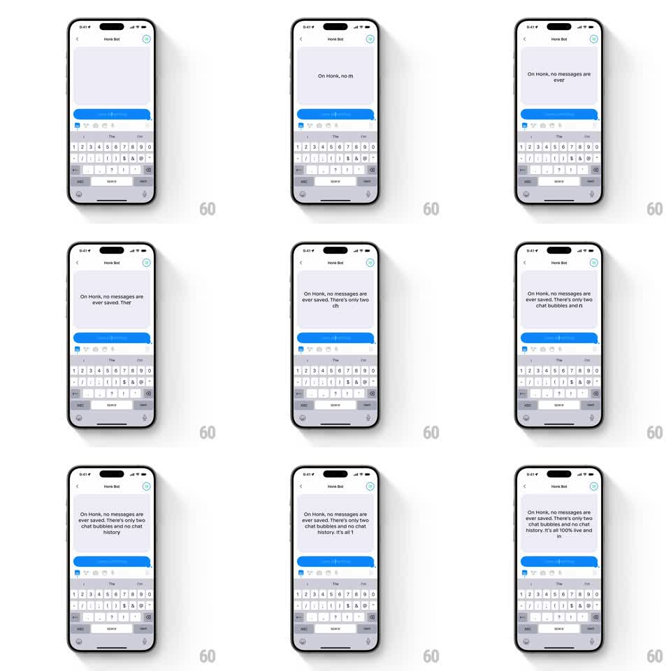

Media
Frame-by-frame

Rebuild this animation 1:1: Honk's text-scale typing effect - as a long message is typed into the live blue bubble, the text scales down in steps to keep fitting the bubble, so a paragraph shrinks from headline size to compact size while it grows.

Rebuild this animation 1:1: Honk's text-scale typing effect - as a long message is typed into the live blue bubble, the text scales down in steps to keep fitting the bubble, so a paragraph shrinks from headline size to compact size while it grows. ## Integration Integration: stack-agnostic spec - springs given as stiffness/damping, timed motions as duration + curve; map every value to your framework and animation library of choice. ## Scene Honk chat with Honk Bot, keyboard open on the number/symbol layout. One live blue bubble in the message area fills with typed text: "On Honk, no messages are ever saved. There's only two chat bubbles and no chat history. It's all 100% live and in..." The font size steps down as the character count climbs. ## Motion spec Pattern: character-by-character typing with discrete text scale-down. - Text appears character by character (~40ms per keystroke, natural cadence with slight jitter). - The bubble starts with large text (about 28pt); at defined length thresholds the whole text block scales down (28 -> 22 -> 18 -> 15pt), each step animated over 180ms with a slight spring (scale overshoot 2%). - The bubble's bounds follow the text's new laid-out size with the same resize spring (stiffness ~380, damping ~22) used elsewhere in Honk. - Between thresholds, only width/height morph; the font size itself holds steady - scaling happens at thresholds, not per character. - The keyboard switches layouts during typing (ABC <-> 123) as punctuation and numbers are entered. ## Calibration - Scale steps feel like the bubble is "making room" - pair every font step with the bounds spring. - Text remains left-aligned and vertically centered in the bubble at all sizes. ## Reduced motion Type at a fixed small font size with instant character appearance. ## Don't miss - This is the inverse of naive typing: longer message, smaller text - do not let the bubble grow unbounded instead. - The final period of each sentence lands with a tiny extra pause (~120ms).